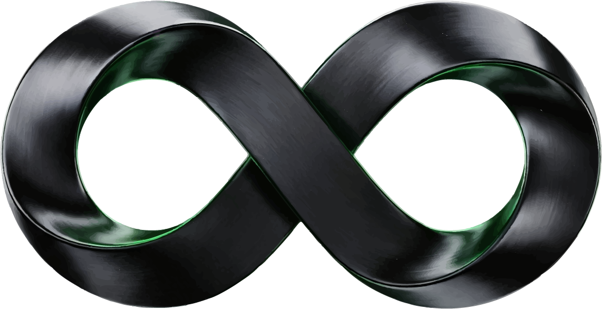

187N · V16 werkpakket
113 lessen · 34 nieuw
Course en teleprompter · Start · Second Brain · Designskills en profielen
Start: je brand, Codex en Hermes
Research, Second Brain en aanbod
Branding en productbeelden
Storefront bouwen → Shopify Liquid
Video: van opname naar je eigen editor
Content, creatives en je advertentiebibliotheek
De workflows achter je business
Eigen skills en slimmer bouwen
Klantwerk, kansen en nieuwe producten
Hermes: je team dagelijks laten doorpakken
Jouw volgende stap
Bonus: alle twaalf GitHub-projecten